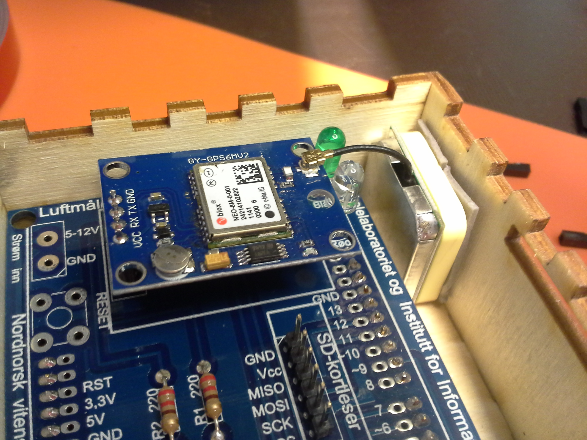
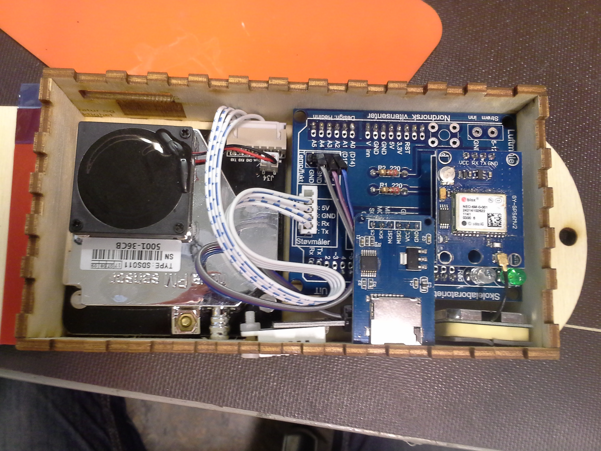

Skru fast komponenter
Nå når alle delene har fått loddet på seg header pinner og plugger kan vi skru
fast delene i treboksen.
Dette trenger du
- Treboksen
- Arduino Uno
- Header shield
- Støvmåleren og ledningen
- Temperatursensoren ("Sukkerbiten")
og ledningen - GPS modulen og antenna
- microSD kortleseren
- ZipLock-posen med smådeler
- Tang
Start
Ta alle delene og ledninger fra hverandre og løsne shieldet fra Arduinoen.
Dette vil gjøre det enklere for deg å komme til skrue-hullene og feste mutter
senere.
Skruene
Ta frem treboksen din og finn plastskruene og mutterene i ZipLock-posen. Plugg
skruer inn i alle sju hullene på bunnplaten og én i det runde hullet ved siden
av hullet for temperatursensoren i den høyre sideplaten. Skruene skal stikk inn
i boksen. Du trenger ikke å skru på muttrene ennå, vi skal først plassere
Arduinoen og Støvmåleren

Plassér Arduinoen på sin rette plass i treboksen. Skruene vil passe gjennom
hullene i Arduinoen og USB og strømporten på Arduinoen vil passe gjennom hullene
på toppen. Skru fast en mutter i hver skrue om stram til med tang slik at
Arduinoen sitter godt fast.
Før du skrur fast støvmåleren, bør du koble til den hvite og blåe ledningen inn
i støvmåleren. Ledningen passer bare én vei, så du kan ikke gjøre noe galt der.
Plassér så Støvmåleren ved siden av Arduinoen. Skruene vil passe i skruehullene
til støvmåleren og luftutslippet til måleren vil stikke ut gjennom hullet i
sideplaten. (Den ene skruen kan være litt vanskelig å få tak i, det er ikke
farlig om du ikke fester den. Måleren burde sitte like godt fast uten. Fjern i
såfall skruven ved å dra den ut fra bunnplaten igjen.)
Ta temperatur sensoren og plugg i ledningen i sensoren. Plassér sensoren i
siden på treboksen. Den hvite klossen ("Sukkerbiten") passer gjennom det
store firkantete hullet og skruen går da gjennom et tilsvarende hull i sensoren.
Sukkerbiten går ikke hele veien gjennom hullet, den skal såvidt stikke ut fra
sideplaten. Fest en mutter på skruen slik at den sitter godt fast.
Plugge sammen komponenter
Klipp til to korte strimler av den røde dobbeltsidige teipen du finner i
ZipLock-posen. Disse skal du lime fast på den gule/hvite siden av GPS antenna.

Ta nå shieldet og plugg det inn i Arduinoen. Så kan du ta GPS modulen og plugge
den i oppå shieldet. Fjern beskyttelsen på teipen på GPS antenna og lim den fast
i det øverste høyre hjørnet av treboksen. Plugg i og knepp til ledningen til
GPS chipen.

Så kan du plugge i SD-kortleseren. Den vil stikke ut gjennom den smale åpningen
sideplaten.

Ledningen til Temperatursensoren
Se nøye på temperatursensoren du har skrudd fast. Den har tre plugger. Hvis du
ser nøye på chipen der ledningen er plugget i, vil du se at hver av pluggene er
merket med +, out og -. Det er viktig at du plugge i rett ledning i rett
plugg i shieldet. Siden ledningen har tre ledere med forskjellige farger (i
våre bilder er det blå, lila og grå), må du huske hvilken farge er plugget i
hvilken plugg på sensoren.
Se nå på pinnene for temperatursensoren på shieldet. Der er det fire pinner med
markeringene VCC, Data og to ganger GND.
- Pinnen for
VCCskal kobles til+på sensoren - Pinnen for
Dataskal kobles tiloutpå sensoren - En av pinnene for
GND(spiller ingen rolle hvilken) skal kobles til-på
sensoren.
Ledningen til Støvmåleren
Se nå nøye på Støvmåleren der ledningen er koblet til. Her er det enklest å se
at markeringen lengst til venstre viser TxD. Følg den siden av ledningen og
plugg inn ledningen med den siden i TX-pinnen for støvmåleren på shieldet.
Siden det bare er fire pinner på shieldet vil pluggen stikke ut med ett hull på
venstresiden. Om du ser på pluggen, vil du legge merke til at det ikke er noen
ledning som går i det hullet.

Alt på plass
Nå burde boksen se ut som vist på bildet under

Batteriet
Lim til slutt fast to brede strimler av dobbeltsidig teip på bunnplaten og
sideplaten på nedsiden av treboksen, der det står Batteri. Ta batteriet og
lim det fast.
Gå videre
↑ Gå til innholdsfortegnelsen
← Gå tilbake til forrige steg: Lodde sensorene
→ Gå til neste steg: Sette på lokket